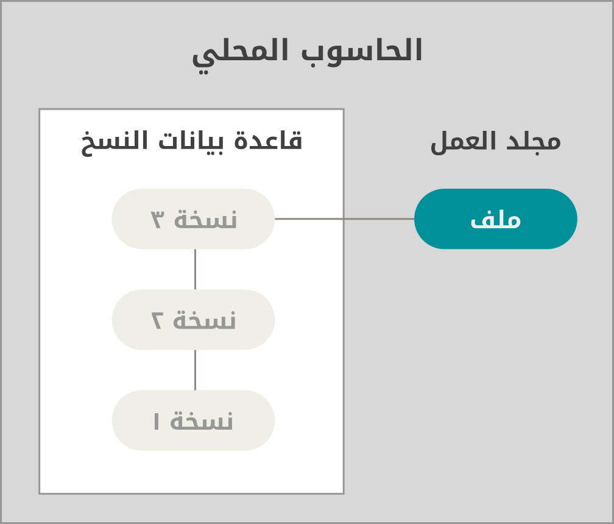
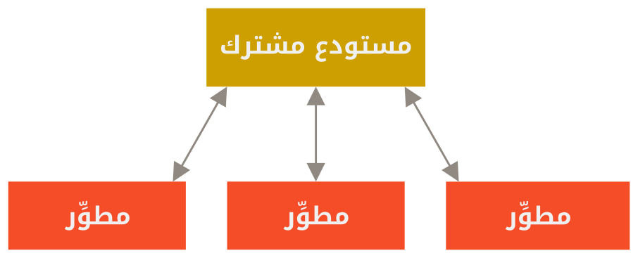
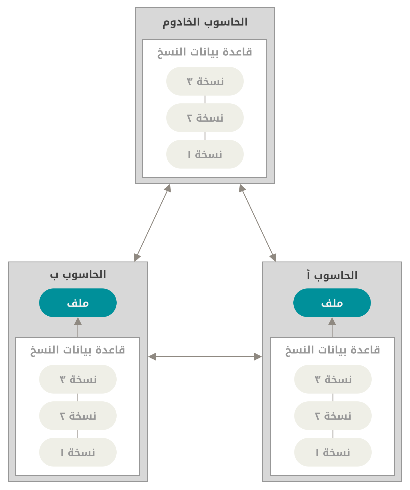

١، ١، عن إدارة النسخ
ما هي «إدارة النسخ»، ولماذا عليك أن تهتم؟ إدارة النسخ هي نظام يسجل التعديلات على ملف أو مجموعة من الملفات عبر الزمان، حتى يمكنك استدعاء نسخ معينة منها فيما بعد. نستعمل في أمثلة هذا الكتاب ملفات مصادر برمجية لإدارة نُسخها، ولو أن في الحقيقة يمكنك فعل ذلك مع أكثر أنواع الملفات الحاسوبية.
إذا كنت مصمم رسوميات أو وب، وتريد الإبقاء على جميع نسخ صورة أو تخطيط (وهذا شيء يُفترض أنك تريد فعله يقينًا)، فإن استخدام نظام إدارة نسخ (VCS) لهو قرار حكيم حقا. فهو يسمح لك بإرجاع ملف محدد إلى حالة سابقة، أو إرجاع المشروع كله إلى حالة سابقة، أو مقارنة التعديلات عبر الزمان، أو معرفة مَن آخر من غيّر شيئا قد يكون سبّب مشكلة، أو مَن تسبب في إحداث علّة، وغير ذلك. استخدام نظام إدارة نسخ أيضا يعني في العموم أنك إذا دمّرت أشياءً أو فقدت ملفات، فإنك تستطيع استرداد الأمور بسهولة. وكل هذا تحصل عليه مقابل عبء ضليل جدا.
الأنظمة المحلية لإدارة النسخ
طريقة إدارة النسخ عند الكثيرين هي نسخ الملفات إلى مجلد آخر (ربما بختم زمني، إذا كان المستخدم بارعا). هذه الطريقة شائعة جدا لأنها سهلة جدا، لكنها أيضا خطّاءة جدا جدا. فسهل جدا أن تنسى أي مجلد أنت فيه وتحرر ملفًا خطأ أو تنسخ على ملفات لم ترد إبدالها.
لحل هذه القضية، طوّر المبرمجون منذ زمن بعيد «أنظمة محلية لإدارة النسخ» ذات قاعدة بيانات بسيطة تحفظ جميع التعديلات على الملفات المراد التحكم في نُسخها.

كان من أشهر أنظمة إدارة النسخ نظام يسمى RCS، وهو ما زال موَزَّعًا مع حواسيب كثيرة اليوم. يعمل RCS بالاحتفاظ بمجموعات الرقع (أي الفروقات بين الملفات) بصيغة مخصوصة على القرص؛ فيمكنه إذًا إحياء أي ملف من أي حقبة زمنية بمجرد جمع الرقع.
الأنظمة المركزية لإدارة النسخ
المشكلة الكبرى الأخرى التي واجهت الناس هي احتياجهم إلى التعاون مع مطوِّرين على أجهزة أخرى. فحلوها بإنشاء «الأنظمة المركزية لإدارة النسخ» (CVCS). لهذه الأنظمة (مثل CVS و Subversion و Perforce) خادوم وحيد به جميع الملفات المراقَبة، وعملاء يسحبون الملفات من ذلك المركز الوحيد. كان هذا هو المعيار المتبع لإدارة النسخ لأعوام عديدة.

لهذا الترتيب مزايا كثيرة، لا سيما على الإدارة المحلية للنسخ. مثلا، الجميع يعلم، إلى حدٍ ما، كل ما يفعله الآخرون في المشروع نفسه. ولدى المديرين تحكم مفصّل في تحديد مَن يستطيع فعل ماذا، وإنه لأسهل كثيرا إدارة نظام مركزي مقارنةً بالتعامل مع قواعد بيانات محلية عند كل عميل.
ولكن لهذا الترتيب بعض العيوب الجسيمة. أوضحها هو نقطة الانهيار الحاسمة الذي يمثلها الخادوم المركز. فإذا تعطل ساعةً، ففي تلك الساعة لن يستطيع أحدٌ قَط التعاون أو حتى حفظ تعديلاتهم على ما يعملون عليه. وإذا تلف قرص قاعدة بيانات المركز، ولم تحفظ أي نسخ احتياطية، ستفقد كل شيء تماما: تاريخ المشروع برُمّته، ما عدا أي لقطات فردية صادف أن يُبقيها الناس على أجهزتهم المحلية. تعاني الأنظمة المحلية لإدارة النسخ كذلك من هذه العلة نفسها؛ وقتما جعلت كل تاريخ المشروع في مكان وحيد، عرّضت نفسك لفقد كل شيء.
الأنظمة المتوزعة لإدارة النسخ
الآن تتدخل الأنظمة المتوزِّعة لإدارة النسخ (DVCS). في نظام متوزِّع (مثل جت و Mercurial و Darcs)، لا يستنسخ العملاء اللقطة الأخيرة فقط من الملفات، بل يستنسخون المستودع برُمّته، بتاريخه بالكامل. لذا فإن انهار أحد الخواديم فجأة، وكانت هذه الأنظمة تتعاون عبر هذا الخادوم، فيمكن نسخ مستودع أي عميل إلى الخادوم مجددًا لإعادته للعمل. كل نسخة هي في الحقيقة نسخة احتياطية كاملة لجميع البيانات.

علاوة على ذلك، الكثير من هذه الأنظمة تتعامل جيدا مع وجود العديد من المستودعات البعيدة التي يمكنها العمل معها، لذا يمكنك التعاون مع مجموعات مختلفة من الناس بأساليب متعددة في الوقت نفسه داخل المشروع الواحد. هذا يسمح لك باتباع أساليب تطوير مختلفة لم تكن ممكنة في الأنظمة المركزية، كالأساليب الشجرية.